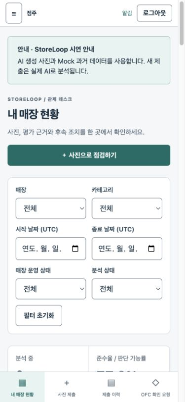
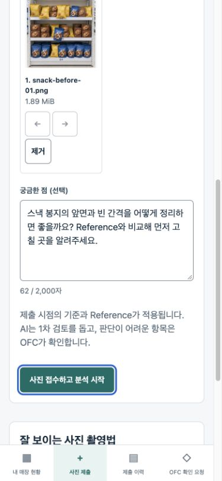
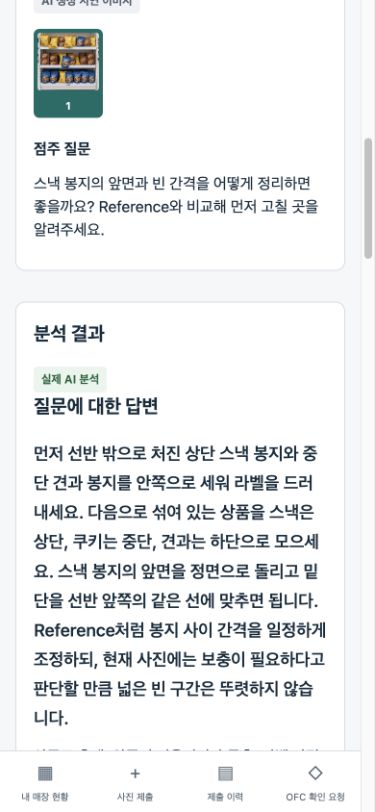
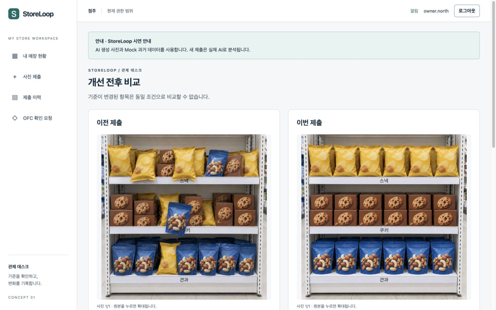
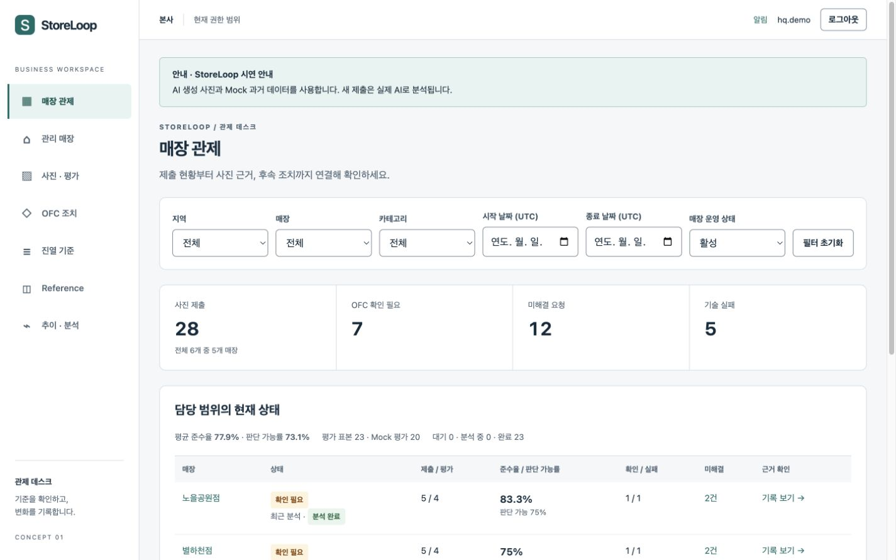
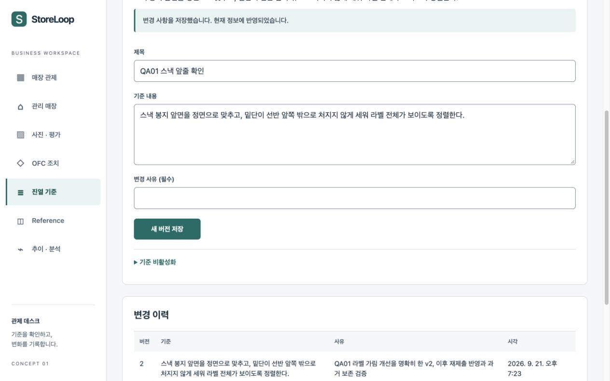
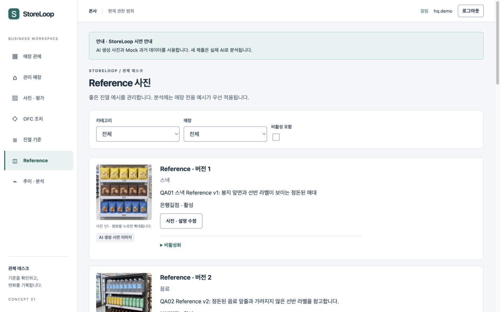
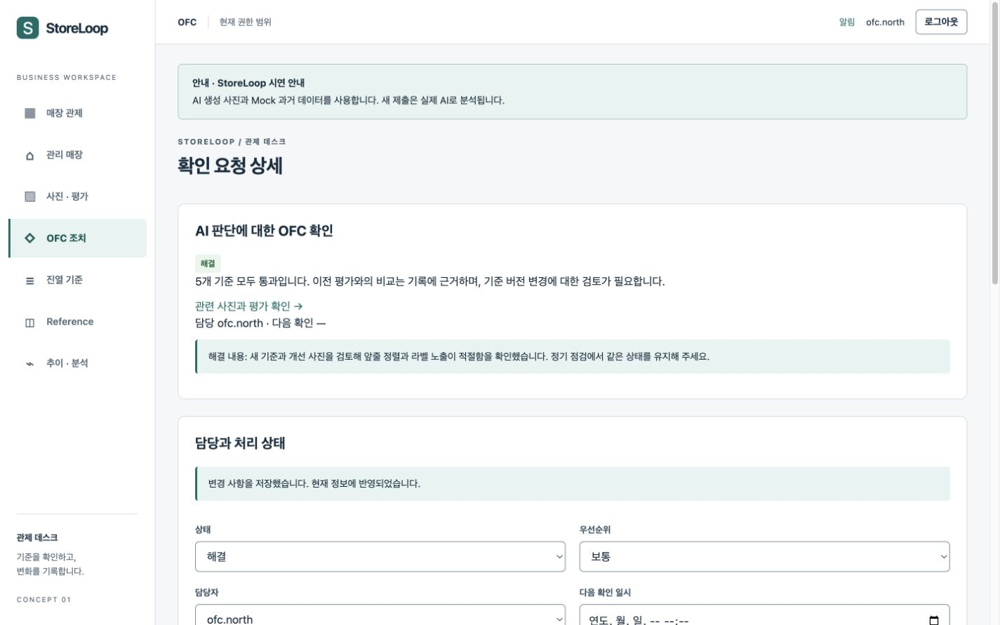

01시작과 로그인
이 매뉴얼의 접속 주소는 http://127.0.0.1:5181입니다. 한 주소에서 로그인한 계정의 역할에 따라 화면이 바뀝니다. 실제 앱 사용에는 로컬 서버가 실행되어 있어야 합니다. 이 HTML 문서 자체는 인터넷 없이 열 수 있습니다.
로컬 서비스 준비
프로젝트 폴더 hack2026/project에서 다음 명령을 사용합니다. 최초 준비는 Node 22.12 이상, npm 10 이상, Python 3.11 이상, PostgreSQL 14 이상과 로그인된 Codex CLI 환경이 필요합니다. 설치 환경별 상세는 프로젝트 실행 안내를 확인하세요.
cd /path/to/hack2026/project
./scripts/setup.sh
./scripts/start.sh --concept 1이미 설치된 환경에서 해당 화면만 직접 실행하거나 빌드 확인을 할 수 있습니다. 업무 API와 작업자가 먼저 실행되어 있어야 합니다.
npm run dev --workspace=@storeloop/concept-01
npm run build --workspace=@storeloop/concept-01
npm run preview --workspace=@storeloop/concept-01dev와 preview는 같은 5181 포트를 사용하므로 동시에 실행하지 않습니다. 중지는 ./scripts/stop.sh로 요청합니다. 이 명령은 SIGTERM을 보낸 뒤 바로 반환하므로, ./scripts/db.sh stop 전에 해당 실행 프로세스가 모두 종료됐는지 확인하세요. DB도 중지하려면 stop 실행 전에 프로젝트 실행 안내의 관리 PID 기록·종료 요청·종료 확인 절차를 따릅니다. 별도 터미널의 서버는 종료 후 프롬프트가 돌아왔는지 확인하세요.
로그인
- 주소를 열고 로그인 ID와 비밀번호를 입력한 뒤 로그인을 누릅니다.
- 비밀번호는 프로젝트의 사용자 전용
.local/demo-credentials파일에서 본인이 로컬로 확인합니다. 이 매뉴얼에는 비밀번호가 없습니다. - 다른 역할을 확인하려면 로그아웃 후 해당 계정으로 다시 로그인합니다.
| 역할 | 합성 시연 로그인 ID | 기본 확인 범위 |
|---|---|---|
| 점주 | owner.north / owner.south | 연결된 지역별 3개 매장 |
| OFC | ofc.north / ofc.south | 담당 매장과 같은 지역의 미배정 후보 |
| 지역 관리자 | regional.north / regional.south | 소속 지역 |
| 본사 | hq.demo | 전사 영업 범위 |
| 플랫폼 운영자 | operator.demo | 계정·연결·기준 정보·기술 처리 메타데이터 |
계정 비활성·연결 누락 확인용 ID는 owner.inactive, owner.unmapped입니다. 일반 시연은 정상 계정으로 시작하세요. 같은 브라우저에서 다른 시안의 역할을 바꾸면 공통 로그인 상태가 다른 탭에도 반영될 수 있습니다.
03점주 사진 점검
내 매장 현황에서 시작
＋ 사진으로 점검하기 또는 사진 제출 메뉴를 엽니다. 제출 화면은 /store-owner/submit입니다.
- 매장과 카테고리사진 제출 화면에서 활성 연결 매장과 카테고리를 선택합니다. 한 화면에서 모든 입력을 확인할 수 있습니다.
- 사진과 순서사진을 추가하면 미리보기가 나타납니다. ← / →로 순서를 바꾸고 제거로 잘못 선택한 사진을 뺍니다.
- 질문과 접수궁금한 점을 선택 입력한 뒤 사진 접수하고 분석 시작을 누릅니다. 접수된 제출의 상세 화면으로 이동합니다.
| 입력 | 사용 방법 |
|---|---|
| 매장·카테고리 | 본인과 연결된 활성 매장 및 활성 카테고리를 선택합니다. 연결이 없으면 운영자에게 연결 상태를 확인합니다. |
| 사진 | JPEG/PNG 1~5장, 한 장당 최대 10MiB. 매대 전체·상품 앞면·가격표가 밝고 선명하게 보이도록 선택합니다. 미리보기 순서가 분석 사진 번호가 됩니다. |
| 궁금한 점 (선택) | 최대 2,000자. 꼭 확인할 항목이나 현장 상황을 구체적으로 적습니다. 선택 입력입니다. |
{kind=link}

{kind=link}

접수와 결과 확인
접수 후 분석 대기 → 분석 중 → 분석 완료 또는 기술 실패로 상태가 바뀝니다. 전송 중에는 반복해서 제출하지 마세요. 접수된 기록은 이력에서 다시 열 수 있습니다. 30초가 지나면 지연 안내가 표시될 수 있으며, 결과가 나오기 전에는 준수 여부가 확정되지 않습니다.
상세 화면에서 사진과 평가가 나란히 놓입니다. 사진 번호를 선택하거나 원본을 열어 확인하세요. 질문 답변·요약 다음에 준수율, 판단 가능률, 기준별 판정·관찰 근거·개선 행동을 읽습니다.
적용 기준 · Reference / 제출 이력 / OFC 대응 탭을 차례로 확인합니다. 생성 출처 배지는 해당 사진 메타데이터에 따라 표시됩니다. OFC 대응 → OFC에 확인 요청에서 제목·내용·우선순위를 입력합니다.
{kind=link}

개선 후 다시 제출하고 비교
- 본인이 제출한 상세에서 개선 후 다시 제출을 누릅니다.
- 같은 매장·카테고리로 연결된 상태에서 개선한 새 사진과 질문을 제출합니다. 기존 결과를 덮어쓰지 않습니다.
- 후속 제출의 이전 사진과 비교 버튼을 열어 이전·이번 사진과 날짜, 준수율·판단 가능률, 기준별 변화를 확인합니다.
기준 버전이 바뀌거나 어느 한쪽이 판단 불가이면 동일 조건의 개선으로 단정하지 않습니다. 제출 이력은 /store-owner/history, 확인 문의는 /store-owner/issues에서 다시 볼 수 있습니다. 같은 매장의 다른 사람 기록을 볼 수 있어도 그 사람의 제출에 재제출하거나 본인 문의를 만드는 권한은 별개입니다.
{kind=link}

04OFC·지역·본사 업무
매장 관제에서 지역·매장·카테고리·UTC 기간·매장 상태를 먼저 정합니다. 사진 제출, OFC 확인 필요, 미해결 요청, 기술 실패 숫자를 누르면 같은 조건의 목록으로 이동합니다. 매장 행의 기록 보기 →에서 개별 사진을 엽니다.
{kind=link}

담당 매장 연결 · OFC
매장 관리 화면 /ofc-admin/stores에서 미배정 후보를 확인합니다. 등록 사유를 입력하고 담당 매장으로 등록 버튼을 누릅니다. 후보 단계에는 최소 매장 정보만 보이며, 담당 등록 후 업무 자료를 확인합니다. 다른 담당자가 먼저 등록했다면 최신 후보 목록을 다시 읽습니다.
진열 기준을 등록·변경
- 진열 기준
/ofc-admin/guidelines에서 새 기준 등록 버튼을 엽니다. - 규칙 키·제목·적용 단계와 지역/매장/카테고리, 기준 내용·사유를 입력합니다. 규칙 키는 동일 점검 항목을 연결하는 값이므로 의미가 다른 규칙을 같은 키로 만들지 않습니다.
- 기존 기준은 내용과 사유를 바꾸고 새 버전 저장 버튼을 누릅니다. 새 제출부터 새 버전이 적용되고 과거 평가의 기준은 남습니다.
| 역할 | 기준·Reference 관리 범위 |
|---|---|
| OFC | 담당 매장·매대 기준, 담당 매장 전용 Reference |
| 지역 관리자 | 자기 지역의 지역 기준과 하위 매장·매대 기준/Reference |
| 본사 | 본사와 하위 기준, 전사 공통 카테고리 기준·Reference |
같은 규칙 키는 카테고리 → 매장 → 지역 → 본사 순으로 적용됩니다. 기준을 사용하지 않을 때는 비활성화하며 과거 기록은 삭제하지 않습니다. 상위·공통 기준은 권한이 있는 관리자만 변경합니다.
{kind=link}

좋은 진열 예시 · Reference
Reference는 160px 썸네일과 설명·카테고리·대상·버전·상태를 한 행씩 살피는 관리 목록입니다. 사진 · 설명 수정으로 편집하고 새 버전 저장을 누릅니다. 새 등록은 아래 Reference 등록 폼에서 진행합니다.
경로는 /ofc-admin/references입니다. 등록 시 사진 한 장, 카테고리, 공통 또는 허용 매장, 설명·변경 사유를 정합니다. 같은 카테고리에서는 매장 전용 예시가 우선 적용됩니다. 사진/설명 교체는 새 버전이므로 과거 평가에 쓰인 원본은 유지됩니다. OFC·지역 관리자·본사는 현재 관리 범위 안에서 교체되었거나 비활성화된 Reference 사진도 확인할 수 있습니다. 점주는 허용된 활성 예시와 연결된 제출 결과의 적용 예시만 볼 수 있으며, 플랫폼 운영자는 영업 사진을 열람하지 않습니다. 새 버전 저장 이후에는 새로 제출한 사진의 적용 정보를 확인하세요.
{kind=link}

확인 이슈에 대응
/ofc-admin/issues에서 사진과 연결된 요청을 엽니다. 원본 사진·AI 근거를 확인하고 담당자·우선순위·상태·다음 확인 시각을 정하고 해당 폼의 저장 버튼을 누릅니다. 별도 조치 의견 폼에 내용을 입력하고 조치 기록하기 버튼을 누릅니다. 해결 상태로 바꿀 때는 해결 내용을 입력합니다. 후속 사진을 확인한 뒤 닫는 것이 좋습니다. 점주는 해당 조치 이력을 읽을 수 있고 AI 원문은 수정되지 않습니다.
{kind=link}

추이·비교·기본 집계
/ofc-admin/analytics에서 같은 범위와 기간의 주별 준수율·판단 가능률, 표본 수, Mock 매출 상관관계, 매장/지역/카테고리별 집계를 봅니다. 상관 값은 가상 매출을 사용하며 매출 원인·예측을 뜻하지 않습니다. 표본 부족·분산 없음·결측은 계산 불가 또는 제외로 표시하며 0으로 대신하지 않습니다. 화면 표의 수치도 함께 확인하세요.
05플랫폼 운영자 업무
/platform-admin에서 시작합니다. 플랫폼 운영은 계정과 서비스 처리 지원을 담당합니다. 영업 기준 내용·Reference·점주 질문·사진·평가 본문은 이 역할의 열람 대상이 아닙니다.
계정과 연결
- 계정 화면
/platform-admin/accounts에서 계정을 검색하거나 일반 계정 등록을 펼쳐 아래 입력 폼을 엽니다. 항목을 입력한 뒤 계정 등록 버튼으로 제출합니다. - 로그인 ID·이름·일반 역할·필요 지역·초기 비밀번호·변경 사유를 입력합니다. 새 비밀번호는 12~128자이며 응답이나 감사 화면에 표시되지 않습니다. 플랫폼 운영자로 승격하는 선택지는 없습니다.
- 계정 상세에서 활성 상태·역할·지역을 확인합니다. 점주/OFC의 매장 연결은 전체 선택 목록을 확인하고 연결 저장 버튼으로 저장합니다.
매핑 저장은 선택한 매장으로 연결 전체를 바꿉니다. 선택 해제한 매장의 접근은 종료됩니다. 비활성화·역할·연결 변경은 기존 로그인에도 반영되므로 변경 대상과 사유를 확인하세요.
지역·매장·카테고리
/platform-admin/catalogs에서 구분을 고르고 코드·이름·지역/매장 유형/설명 등을 관리합니다. 사용하지 않는 항목은 삭제 대신 비활성화합니다. 신규 선택은 제한되지만 과거 제출과 참조 관계는 보존됩니다. 이 화면은 업무용 진열 기준 내용 편집 화면과 다릅니다.
서비스 상태와 실패 재처리
서비스 상태에서 API·DB·AI 프로세스·작업자 응답과 실제 모델 준비 상태를 구분해 확인합니다. 프로세스가 살아 있어도 실제 모델 호출이 실패할 수 있습니다. Mock 장애 사례 수치는 실제 운영 작업과 구분합니다.
작업 상세의 실패 작업 재처리를 누르면 확인 창이 열립니다. 사유를 입력하고 같은 입력으로 다시 분석을 눌러 확정합니다.
경로는 /platform-admin/jobs입니다. 재처리는 종료된 실패 작업에서만 가능하며, 같은 입력을 다시 분석하고 과거 시도를 남깁니다. 진행 중·성공 작업은 재처리하지 않습니다. 점주가 개선된 새 사진을 보낼 때는 재처리 대신 새로운 재제출을 사용합니다.
감사 이력과 공지
/platform-admin/audit에서 수행자·대상·시각·사유·결과·안전한 변경 전후를 확인합니다. 감사 기록을 수정·삭제하는 기능은 없습니다. /platform-admin/announcements에서 제목·일반 텍스트 본문·게시 기간·활성 상태·변경 사유를 관리합니다. 게시 기간 내 활성 공지만 각 역할의 화면에 나타납니다.
06상태별로 다음 행동 정하기
| 보이는 상태 | 뜻과 다음 행동 |
|---|---|
| 분석 완료 | 질문 답변·기준별 판정·사진 근거·개선 행동·Reference 비교를 확인합니다. 준수율과 판단 가능률을 함께 읽습니다. |
| 준수 / 개선 필요 / 판단 불가 | 진열 기준별 판정입니다. 판단 불가는 사진에서 확인하기 어렵다는 정상 결과이며 위반이나 기술 실패로 바꾸어 해석하지 않습니다. 촬영을 보완하거나 OFC에 확인을 요청합니다. |
| 분석 대기 / 분석 중 | 아직 처리 중입니다. 이력을 다시 열거나 상태 다시 확인을 사용합니다. 30초 목표를 넘을 수 있으며 화면을 닫아도 접수된 작업은 남습니다. |
| 기술 실패 | 분석 결과를 저장하지 못한 상태입니다. 오류 안내·요청 번호가 있으면 운영자에게 전달하고 상태를 다시 확인합니다. 실패를 준수율0으로 읽지 않습니다. |
| 연결 오류 / 사진 로딩 오류 | 네트워크·로컬 서비스 상태를 확인한 뒤 목록에서 해당 기록을 다시 열어 사진을 불러옵니다. 처리 상태 확인 버튼이 있으면 현재 상태를 다시 조회합니다. 접수 여부가 불명확하면 먼저 이력을 확인합니다. |
| 기록 없음 / 조건에 맞는 항목 없음 | 필터·기간·활성 조건을 확인하거나 초기화합니다. 실제 미제출과 필터 결과 없음은 미준수를 뜻하지 않습니다. |
| 연결된 매장 없음 | 계정의 매장 연결을 운영자에게 확인합니다. 연결이 없는 상태에서 임의 매장으로 제출할 수 없습니다. |
| 기준 또는 Reference 없음 | 해당 제출 시점에 적용 자료가 부족한 것입니다. 없는 예시와 비교했다고 해석하지 말고 영업 담당자에게 기준·예시를 보완 요청합니다. |
| 준수율 — / 표본 부족 | 판단 가능한 기준이나 비교 표본이 없습니다. 0%와 다릅니다. 판단 가능률·표본 수·제외 이유를 읽습니다. |
| 다른 변경이 먼저 적용됨 | 동시에 다른 사람이 저장한 경우입니다. 최신 정보와 자신의 입력을 확인하고 명시적으로 다시 저장합니다. 변경 사유와 대상을 재확인합니다. |
| 로그인 화면으로 이동 / 접근 불가 | 세션 만료·비활성·역할 또는 범위 변경일 수 있습니다. 로그인과 현재 연결을 확인합니다. 다른 주소로 우회해서 열 수 없습니다. |
대기/기술 처리 상태와 기준별 진열 판정은 서로 다른 의미입니다. 기준별 판단 불가가 있어도 분석 작업 자체는 완료될 수 있습니다.
저장 충돌과 보안 확인 오류에서 이어가기
기준 저장 중 다른 변경이 먼저 반영되면 최신 내용을 확인한 뒤, 남아 있는 초안과 변경 사유를 검토하고 새 버전 저장 버튼을 다시 누르세요. Reference 충돌은 최신 Reference 확인 (입력 유지) 버튼으로 현재 버전을 읽습니다. 선택한 사진·설명·사유를 확인한 뒤 새 버전 저장 버튼을 눌러야 저장됩니다. 다른 Reference를 선택하거나 수정을 취소하면 이전 복구 조회가 새 편집 대상을 바꾸지 않습니다.
보안 확인이 만료되었습니다 안내에서는 입력과 사진이 유지됩니다. 같은 저장 버튼으로 명시적으로 다시 시도하세요. 실제 접근 권한 오류에서는 업무 자료를 제거하고 오류를 보여 줍니다. 권한을 확인한 뒤 다시 조회 버튼을 사용하세요.
07모바일과 키보드 사용
왼쪽 메뉴가 보이지 않으면 주 메뉴 열기를 누릅니다. 메뉴 닫기 또는 Esc로 닫을 수 있습니다. 점주 이력은 작은 화면에서 카드 행으로 표시됩니다. 사진 제출은 단계 이동 없이 한 페이지에서 이루어집니다. 관리자 표는 표 영역 안에서 좌우로 이동합니다.
키보드로는 Tab/Shift+Tab으로 입력·링크·버튼을 이동합니다. 본문으로 건너뛰기 링크를 사용하면 반복 메뉴를 넘길 수 있습니다. 접힌 설명은 Enter 또는 Space로 펼칩니다. 화면 확대 상태에서 글자와 입력을 읽고, 긴 표는 표 영역만 이동하세요. 원본 사진은 비율을 유지해 관찰하며 미리보기 크기가 업로드 원본을 바꾸지는 않습니다.
이 매뉴얼은 desktop 1440×900과 mobile 390×844에서 렌더, 로컬 이미지 표시, 키보드 이동과 본문으로 건너뛰기를 확인했습니다. 200% 확대는 사용자가 나중에 확인할 예정으로 NOT_RUN입니다. 전체 제품 인수는 별도로 진행 중입니다.
08시연 자료와 결과를 올바르게 읽기
| 표시 | 의미 |
|---|---|
| AI 생성 시연 이미지 | 가상 매대 촬영 자료를 AI로 생성한 사진입니다. 신규 분석이 실제 AI로 수행되었는지와는 별개의 사진 출처입니다. |
| 실제 AI 분석 | 새 제출을 실제 분석 경로로 처리해 검증·저장한 결과입니다. 판정 자체의 절대 정확도를 보장하는 표시는 아닙니다. |
| Mock 데이터 | 가상 과거 평가나 가상 매출·장애 사례입니다. 실제 AI 신규 평가 또는 실제 매출로 소개하지 않습니다. |
| 출처 배지가 없는 과거 Reference | 출처 메타데이터가 없는 호환 응답일 수 있습니다. 이미지의 생김새만 보고 AI 생성 여부를 추정하지 않습니다. |
성능과 해석의 한계
30초는 목표이며 매번 완료를 보장하는 시간이 아닙니다. 대기열·모델 처리·저장·화면 갱신 시간이 합쳐집니다. 화면을 떠났다가 다시 열었다면 표시까지의 시간에 그 간격이 포함될 수 있습니다. 시안별 실제 측정값과 표본은 검증 완료 자료에서 확인해야 하며, 이 초안은 실제 지연 성능을 확정하지 않습니다.
로컬 서비스는 사용자의 컴퓨터에서 API와 작업자가 실행된다는 뜻입니다. 모델 추론까지 인터넷 없이 작동한다는 뜻은 아닙니다. 모델 실행은 기존 Codex 로그인과 이용 조건의 영향을 받습니다.
시안 01 첫 실제 분석 기록
은행길점·스낵의 사진 1장, 기준 5개, Reference 2개로 실제 모델 분석이 완료되었습니다. 모델 처리 90.824초, 접수부터 DB 결과 저장까지 91.132초, 제출 버튼 Enter부터 브라우저의 완료 텍스트 관찰까지 91.732초였습니다. 30초 목표 미달입니다. 이 사례의 기준별 결과는 준수 1개·개선 필요 4개로 준수율 20%, 판단 가능률 100%였으며, 합성 사진 한 사례의 응답입니다. 마지막 관찰 간격 약 3초가 포함된 브라우저 기록이므로 정확한 화면 갱신 순간과는 차이가 있을 수 있습니다.
재제출은 모델 처리 54.601초, 접수부터 DB 결과까지 55.622초였고 기준 5개 모두 준수로 응답했습니다. 브라우저 첫 완료 확인은 69.336초 이하이며, 중간 관찰 간격이 포함된 상한입니다. 정확한 표시 순간으로 해석하지 않습니다. 이번 20%→100%는 합성 사진 사례이고 기준 버전이 달라진 항목은 직접 비교하지 않습니다. 두 분석의 성공으로 전체 기능·디자인 인수를 완료했다고 보지 않습니다.
근거: 실제 AI 실행 기록 · 브라우저 지연 기록 · 재제출 관찰 시간 · 시안 01 기능 인수 진행.
권한과 자료 취급
점주·OFC·지역·본사는 현재 담당 범위의 업무 자료를 봅니다. 사진 원본·썸네일도 같은 범위 제한을 받습니다. 운영자는 계정·연결·기술 상태를 지원하며 영업 본문과 업무 알림을 열람하지 않습니다. 비밀번호·인증 파일·토큰은 문서나 캡처로 공유하지 마세요. 시연에는 제공된 합성 매장·자료를 사용합니다.
09처음부터 끝까지 시연하기
- 영업 준비 · hq.demo 또는 ofc.north음료 기준과 Reference를 확인합니다. 필요하면 권한 범위에서 기준 새 버전 또는 Reference를 등록합니다. 예시 파일은
scripts/seed/assets/shelves/beverage-reference-01.png등 Reference용 파일을 사용합니다. - 첫 점검 · owner.north내 매장 현황에서 ＋ 사진으로 점검하기 버튼을 열고 봄빛역점·음료를 선택합니다.
beverage-before-01.png와 “앞줄 간격과 정렬을 확인해 주세요” 같은 질문을 제출합니다. - 결과와 근거대기·분석 중 상태를 거쳐 완료되면 실제 AI 출처, 질문 답, 판정 이유, 사진 근거와 행동을 읽습니다. 결과가 실패하면 실패를 그대로 기록하고 운영 복구 절차로 이동합니다.
- 개선 사진개선 후 다시 제출에서
beverage-after-01.png를 새 제출로 보냅니다. 이전 사진과 비교에서 사진·날짜·기준 버전과 변화 항목을 확인합니다. - 현장 확인 · ofc.north해당 매장과 같은 기간을 고른 뒤 사진·확인 이슈를 엽니다. 담당·상태·조치 의견을 저장하고 후속 결과를 확인합니다.
- 상위 범위 · regional.north / hq.demo같은 자료를 지역·전사 범위에서 확인하고 Mock 추이/상관의 표본과 제한을 읽습니다.
- 운영 지원 · operator.demo계정·연결·처리 메타데이터·감사·공지를 확인합니다. 별도 실패 사례를 재처리할 때는 종료 실패인지, 동일 입력인지와 사유를 확인합니다.
- 점주 재확인점주로 돌아와 조치 이력과 알림, 연결된 이전·후속 제출을 확인합니다.
파일은 프로젝트 scripts/seed/assets/shelves/에 있습니다. Reference 사진을 점주 평가 사진으로 재사용하지 않습니다. 판단이 어려운 사진은 snack-uncertain-01.png처럼 별도로 준비된 자료를 사용하되, 모델이 특정 문장을 내야 한다고 가정하지 않습니다.
10검증과 화면 증거 상태
최근 실제 검수에서 다중 사진의 미리보기·순서 변경·삭제, 잘못된 형식·10MiB 초과·6장 선택의 차단, 사진 없는 상태와 질문 2,000자 제한을 확인했습니다. 긴 분석 대기와 API 통신 오류·복구도 같은 기록에서 구분했습니다. 입력·복구 실제 검수 기록과 대기·통신 복구 기록을 참고하세요. 별도 AI 분석을 추가하지 않은 입력 검수입니다.
이 매뉴얼은 지정 desktop/mobile 화면과 로컬 이미지·키보드 사용을 확인한 자료입니다. 200% 확대, OS 네트워크 차단을 통한 오프라인 검사와 preview의 최종 역할 동선 검수는 NOT_RUN입니다. 알려진 수정의 실제 재검수와 전체 제품 인수 상태는 검증 기록을 따르며, 매뉴얼 제공이 전체 인수 완료를 의미하지 않습니다.
이번 복구 확인: 기준 충돌 후 초안·사유를 유지한 명시 재저장, Reference의 보안 확인 오류 후 입력 보존과 최신 버전 재저장을 실제 화면에서 확인했습니다. 늦은 복구 응답과 권한 오류의 추가 회귀는 별도 수정·테스트 기록에 구분했습니다.
이 설명은 시안 01의 실제 구현 메뉴·폼·라우트를 읽어 작성했습니다. 직접 확인한 시안 01의 실제 viewport 캡처 8장을 해당 업무 설명에 연결했습니다. 재제출·비교·OFC 해결 화면까지 포함했습니다. 매뉴얼의 지정 desktop/mobile 화면·로컬 이미지·키보드·본문 건너뛰기를 확인했습니다. 전체 제품 인수는 별도로 진행 중입니다.
| 확인 항목 | 현재 상태 |
|---|---|
| 실제 소스의 메뉴·버튼·역할·입력과 설명 대응 | 작성 근거 확인 |
| 점주 홈·제출·첫 답변·전후 비교, 본사 관제·Reference·기준 변경, OFC 해결 캡처 | 8장 반영 · 운영 화면/추가 경계 증거 대기 |
| 실제 앱 전체 흐름·실제 AI·지연 목표 인수 | 첫 분석·재제출 succeeded · 30초 목표 미달 · 전체 기능 인수 진행 중 |
| 매뉴얼 desktop/mobile 렌더·로컬 이미지·키보드 검사 | PASS · 1440×900/390×844, 모든 로컬 이미지 표시와 본문 건너뛰기 확인 · 200%/OS 네트워크 차단 검사 NOT_RUN |
| 독립 디자인 최종 PNG 검수 | 캡처별 독립 확인 진행 중 · 최종 디자인 판정 대기 |
매뉴얼은 외부 CDN·스크립트 없이 로컬 이미지로 구성되며, 모든 로컬 이미지의 실제 렌더를 확인했습니다. OS 네트워크 차단을 통한 오프라인 검사는 실행하지 않았습니다. 200% 확대는 사용자 후속 확인으로 NOT_RUN입니다. 문서 화면 독립 재검수 기록에서 확인 범위를 볼 수 있습니다. README·검수 기록 같은 .md 링크는 HTTP 200 응답을 확인했으나 내장 Browser에서 문서 보기가 되지 않으므로, 해당 로컬 파일을 편집기로 여세요.
작성·검증 추적: 4개 매뉴얼 작성 이력, 시안 01 구현 이력, 독립 디자인 검수, 검증 기준. 기능·디자인 수정이 들어오면 설명과 최종 캡처를 함께 갱신합니다.
11다른 시안과 비교하고 선택
이 시안은 같은 매장 상태를 한눈에 훑고 우선 대응할 기록을 고르는 데 맞춘 관제형 구성입니다. 다섯 시안은 같은 업무 규칙과 자료를 사용하지만 시작 위치, 사진/목록 배치, 탐색 방식이 다릅니다. 같은 역할·같은 매장·같은 질문으로 비교해 보세요.
최종 사용할 시안은 사람이 선택합니다. 다섯 시안 비교 자료에서 구조와 검증 상태를 비교하세요. 최종 결정은 시안 선택 기록에 남깁니다. 현재는 사람의 선택을 기다리고 있습니다.